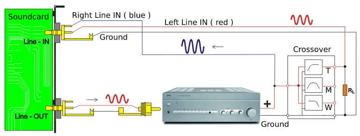
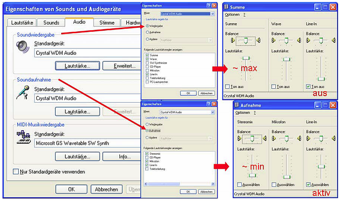

Instructions for Measuring the Crossover

http://www.audio-software.de/frequenzweichenmessung.html
Here the measurement of an unknown passive 3-way loudspeaker crossover is explained as an example.
It is assumed that you are familiar with the operation of ARTA or REW, that the sound card recognition
and some MLS measurements have already been carried out successfully with your sound card.
Your measuring system works perfectly.
The MLS-2 channel measurement is used for maximum accuracy.
Danger!!
2-channel measurement must not be used here for amplifiers with virtual ground in bridge operation.
Absolute risk of destruction!!

Setup for the crossover measurement of the high-frequency branch (T)
RL - load resistance should be the DC resistance of the speaker chassis correspond.
Even if it works from the signal level, do not connect the crossover without a power amplifier directly
to the line-OUT or SPK-OUT of the sound card.
The output impedance of the sound card is generally so high that the perception is clearly to extremely falsified.
|
Setup ( here ARTA Software is used )

Basically, the screen shots show that the line-in recording mixers should be enabled; the recording
volume should be set almost to minimum; the output mixer line-in should be disabled; and the mixer
output volume should be set almost to maximum. Note that the playback and recording levels should
be set similarly in Windows Vista/7/8; the mixers for these operating systems are easier to access and
adjust than the XP mixer.

Windows XP Mixer
It is extremely important that the Line-IN level control in the playback mixer is set to zero,
otherwise there will be feedback, which can even overload the output stage.
Set the level on the power amplifier to very little, because always remember that sound cards
overdrive from 1V or more, or are destroyed from about 5V.
Finding the optimal level
Now call up the impulse / MLS measurement. Now start a 1st test measurement.
By varying the volume control of the power amplifier and further MLS measurements, you can now adjust
the level so that no overload occurs.
Do not change the level afterwards.
Since the right reference channel leads directly from the power amplifier output to the line-IN of the sound
card, it overdrives well before the left channel, which receives the level damped by the crossover.
So do not increase the right channel on the mixer from Line-IN as much as the left channel, which of course
requires channel-separated (left and right) level controls or a balance control.
Carrying out the measurements
After the optimal level has been set, you can now start the 1st measurement.
We'll start by measuring the bass branch first.

Impulse Response Woofer
After the impulse response appears in the diagram, position the left red line (the beginning of the FFT window)
just before the start of the impulse response curve. The FFT window size is set to 2048 values.
Now save the impulse response under a name of your choice.
|
Now switch to the amplitude frequency response diagram.

Frequency response of the bass branch of the crossover
|
|